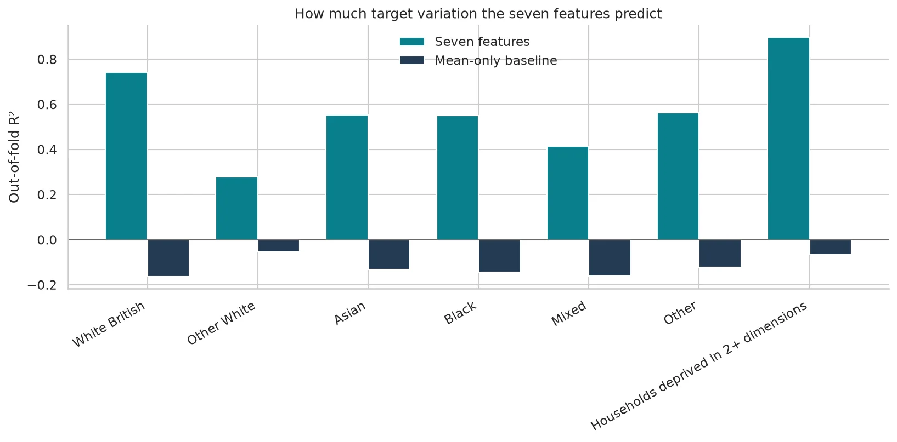
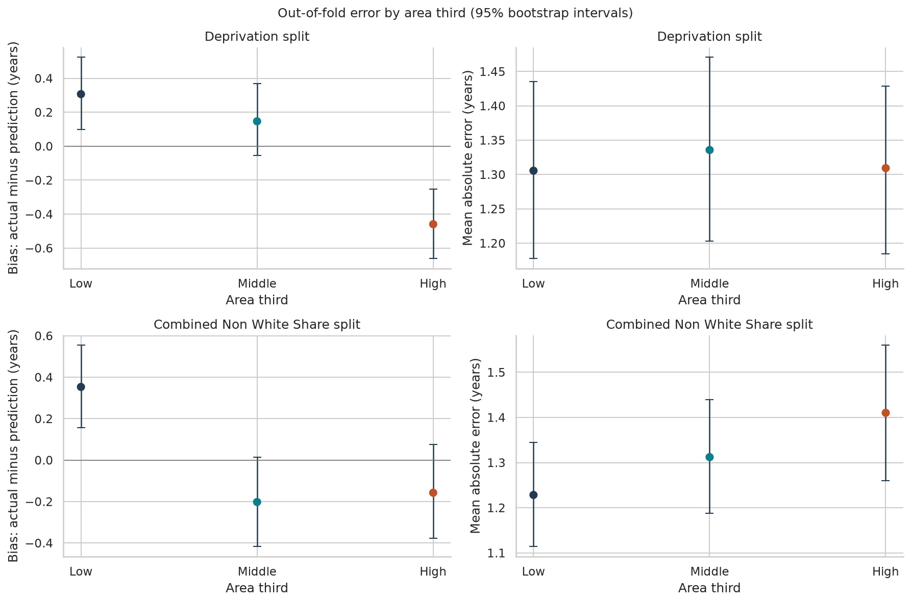
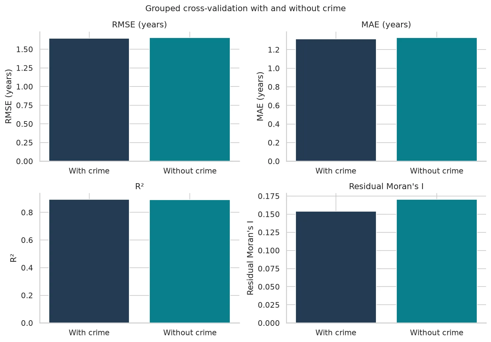

Chapter S12
Proxies, fairness and crime
I tested the seven-feature model instead of treating its original exclusions as proof that proxy effects were absent.
In short
The model does not use ethnicity or deprivation directly, but its measures overlap with them. Its absolute error is similar across deprivation groups while its bias points in opposite directions at the two ends.
Proxy overlap
I predicted the area-level ethnic-composition measures and household deprivation from the seven model features, holding out whole local authorities in cross-validation. The model doesn't use ethnicity or deprivation directly, but its measures overlap with them this much. I report the overlap as a finding and remove no feature. I keep the features because they are the measures this project studies.
| Area-level target | Seven-feature R² | Mean-only baseline R² |
|---|---|---|
| White British share | 0.743 | -0.165 |
| Other White share | 0.277 | -0.055 |
| Asian share | 0.554 | -0.131 |
| Black share | 0.550 | -0.145 |
| Mixed share | 0.414 | -0.162 |
| Other share | 0.562 | -0.123 |
| Households deprived in 2+ dimensions | 0.898 | -0.066 |

Error parity
For the ethnic-composition split, non-White share is Asian + Black + Mixed + Other; Other White remains in the White grouping. I compared out-of-fold prediction errors across deprivation thirds and four-group non-White-share thirds. Bias is actual HLE minus prediction: positive values mean under-prediction; negative values mean over-prediction. Each third contains 218 areas.
| Deprivation third | Bias, 95% interval (years) | MAE, 95% interval (years) | RMSE, 95% interval (years) |
|---|---|---|---|
| Lowest | 0.306 [0.099, 0.524] | 1.306 [1.178, 1.435] | 1.653 [1.473, 1.838] |
| Middle | 0.146 [-0.055, 0.368] | 1.336 [1.203, 1.471] | 1.661 [1.511, 1.812] |
| Highest | -0.459 [-0.662, -0.252] | 1.309 [1.184, 1.429] | 1.620 [1.489, 1.752] |
Across deprivation thirds, the model is similarly accurate in size by absolute error but biased in direction: MAE is about 1.31–1.34 years and the intervals overlap. It under-predicts HLE in the least deprived third by 0.31 years and over-predicts HLE in the most deprived third by 0.46 years, so it understates the real gap. Underclaiming is an accuracy failure under my stated position.
| Four-group non-White-share third | Bias, 95% interval (years) | MAE, 95% interval (years) | RMSE, 95% interval (years) |
|---|---|---|---|
| Lowest | 0.353 [0.157, 0.554] | 1.228 [1.114, 1.345] | 1.501 [1.374, 1.628] |
| Middle | -0.202 [-0.417, 0.013] | 1.312 [1.188, 1.439] | 1.622 [1.471, 1.763] |
| Highest | -0.157 [-0.378, 0.075] | 1.410 [1.260, 1.560] | 1.798 [1.603, 1.986] |
For the four-group split, the lowest-share third is under-predicted on average and its bias interval excludes zero. The middle and highest bias intervals include zero. MAE rises across the thirds, but the bootstrap intervals overlap; the notebook's pairwise comparison flags only the lowest-to-highest point difference as larger than the overlap width, so I describe that contrast without treating it as proof of a general group ranking.

Crime sensitivity
I keep recorded crime because it is one of the measures this project studies. I exclude six city centres where the figures reflect visitors rather than residents, and I label the measure as recorded crime, not crime.
I refitted the grouped cross-validation after removing recorded crime, keeping the same areas, folds, scaling and seed.
| Model | Features | Areas | RMSE (years) | MAE (years) | R² | Residual Moran's I |
|---|---|---|---|---|---|---|
| Seven features, including crime | 7 | 654 | 1.645 | 1.317 | 0.894 | 0.154 |
| Six features, without crime | 6 | 654 | 1.655 | 1.329 | 0.892 | 0.170 |
Removing crime barely changes accuracy, so the model's conclusions do not hinge on it. Positive residual spatial autocorrelation remains in both models; the features leave some spatial pattern unexplained.
